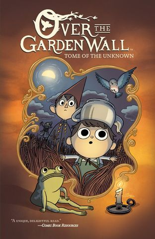
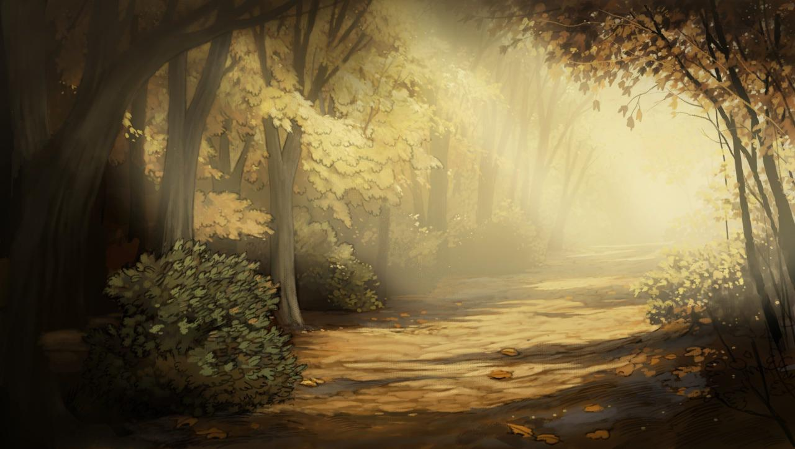
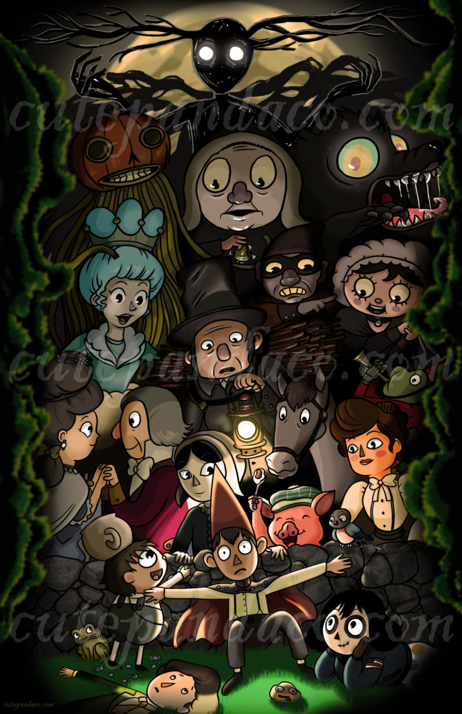
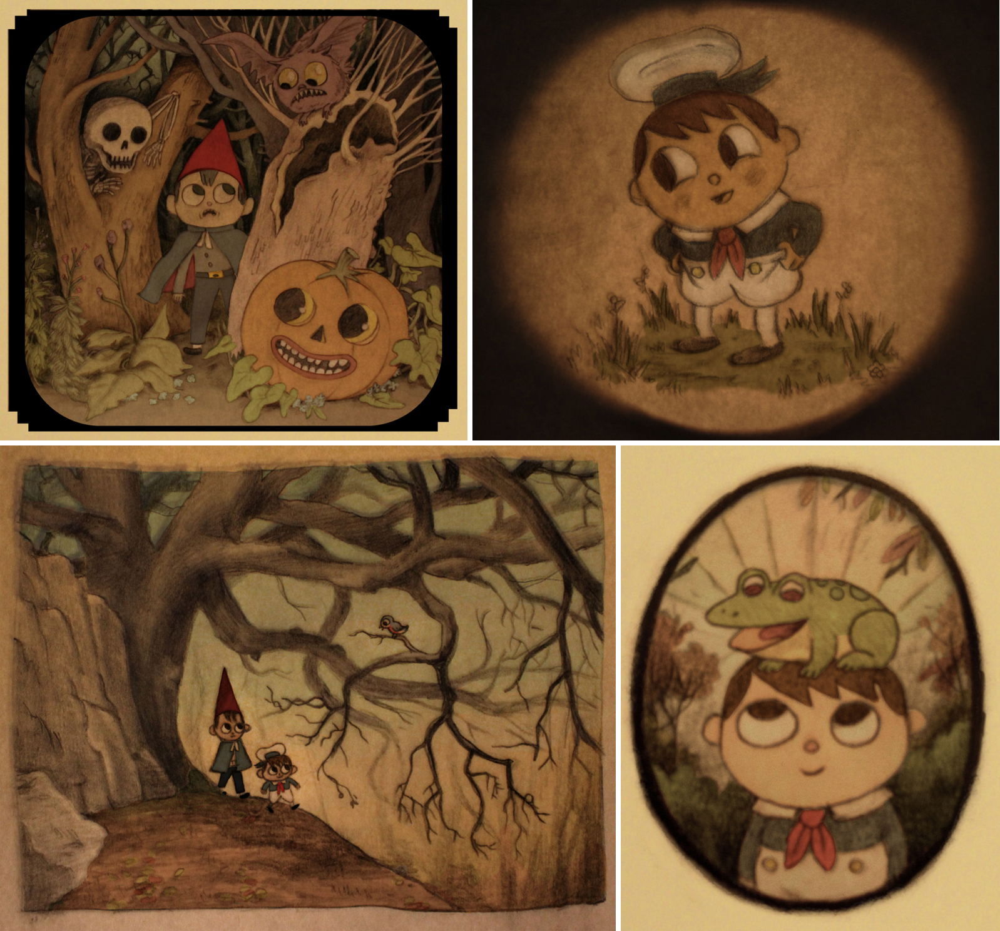
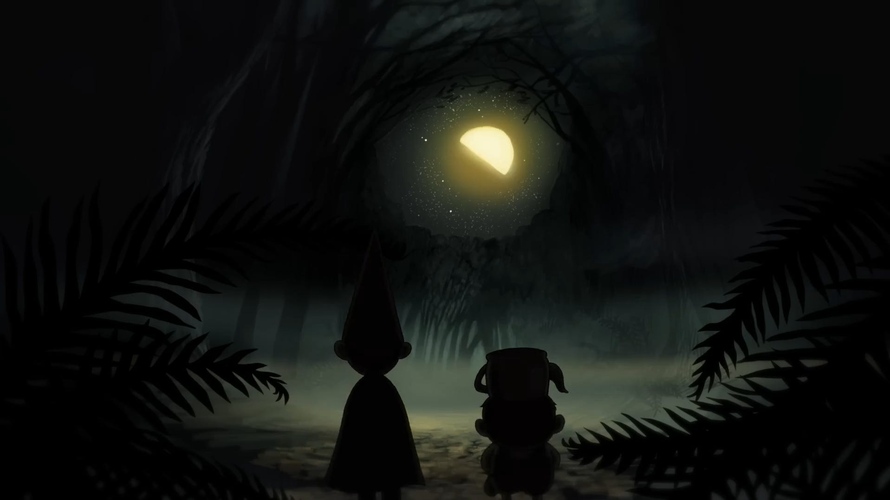

By Ashelic Rose
Published: July 8, 2026

Over the Garden Wall is a mysterious miniseries that follows two brothers, Greg and Wirt, as they wander through a strange forest known as the Unknown...

The Unknown feels like a forgotten storybook filled with folklore, strange creatures, and hidden lessons...

Each character represents a different part of the journey through dear, growth, and acceptance...

The visual style combines vintage illustrations, warm autumn colors, and gothic storytelling elements... This gives the show a nostalgic, atmospheric blend of early American folk art, vintage 19th-century illustration, and classic Fleischer-era animation. It features an eerie, autumnal color palette and richly textured backgrounds that give the show a timeless, storybook-like fairy tale quality.

"Over the Garden Wall" remains memorable because it captures the feeling of lost and discovering something meaningful along the way.
Go Back Over The Garden Wall